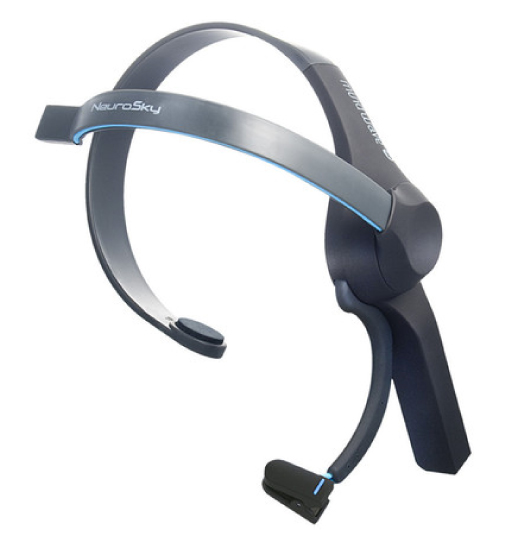

Our Goal
When we first obtained a MindWave EEG, our initial goal was to see if we could use any type of neural network to classify some sort of dataset that we would record from the EEG. We were working on One-Shot learning when we started this project, so we decided to also use the One-Shot framework with the EEG data. I worked with my research partner Sophie Lancaster on this project.
The MindWave EEG
 The MindWave EEG is a lightweight and inexpensive brainwave reader produced by the company NeuroSky. We were able to read in data to csv files from the MindWave using an Android application and used python scripts to parse them, retrieving just the raw values. We then split this data into several examples of equal length.
Our Three Datasets
The first dataset we worked with was taken of four different people staring at the same image (Person dataset). Overall, we obtained a total of 120 samples - 30 from each person. Due to a problem in our code, we initially thought this dataset was too easy for our network to learn because it quickly achieved 100% classification accuracy. Though we later found this was incorrect (see Results), we decided to create two more difficult datasets to examine. For these two datasets, instead of taking data from different people, we recorded one person relaxing vs. doing math (MathRelax dataset) as well as staring at photos of both violent storms and idyllic beach scenes (BeachStorm dataset).
Our Network
To attempt to classify the MindWave data, I modified our One-Shot network (see LINK HERE!!!!!) to use one-dimensional convolutions to match the one-dimensional input data from the EEG instead of the two-dimensiona convolutions (LINK HERE!!!) we had been using on images in all of our other networks. The one-shot framework definitely makes the most sense here because of the limited amount of data we recorded.
Results
After initially finding that the networks also achieved 100% accuracy on the two more difficult datasets, we concluded that there was something wrong with our code. After significant debugging, we found a small error that caused the networks to only use a few of the data examples in the training and testing, allowing the network to easily learn to distinguish between them. When we fixed this bug, our results obviously took a major hit. Our network was no longer able to achieve much better than chance (50%) accuracy on the MathRelax and BeachStorm datasets. However, the results on the Person dataset were somewhat promising. With a two person subset of this dataset, the network can guess correctly about 75% of the time (vs. 50% chance accuracy), and with the full four classes, it can achieve almost 50% accuracy (vs. 25% chance).
Future Work
Though even the performance of our network on the easier Person dataset was admittedly not great, it is somewhat impressive that the network is able to distinguish between people just by processing the extremely noisy one-dimensional data we took from the inexpensive MindWave. We believe that with a higher-precision EEG and a more tightly controlled environment, better results are possible. It could also be the case that a different network structure could be used to better classify the data. We did additionally consider preprocessing our data with a fast-fourier transform (FFT) to see if that could help with classifiation, but we had to move on to other research areas.
There are many potential applications for the use of neural networks on brainwave data (e.g. personal authentication and helping the paralyzed), making this quite an interesting topic to study. I am very curious to see the inevitable progress the deep learning community will make in this field in the coming years.
Go Top